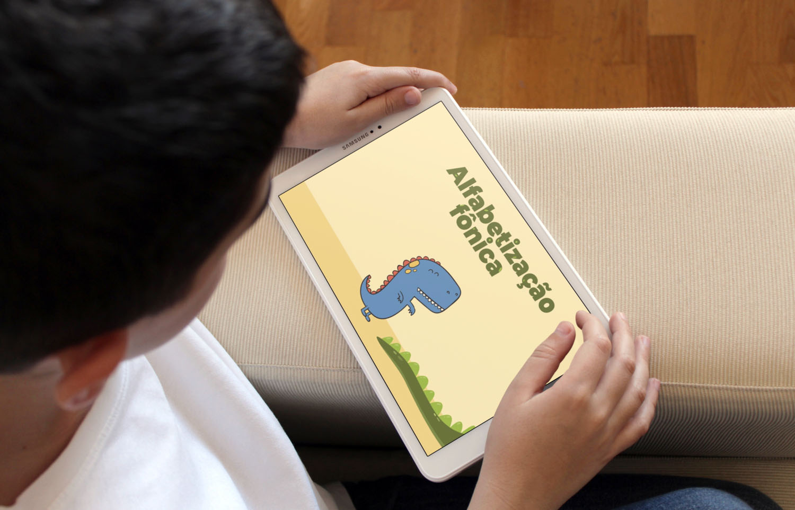

Alfabetização Fônica
Descrição do projeto
O aplicativo “Alfabetização Fônica” foi desenvolvido para auxiliar crianças no processo de alfabetização através da consciência fonológica
O jogo possui um total de 4 fases e design focado em dinossauros.
Pellentesque lobortis, urna eget fringilla rhoncus, libero nulla gravida mauris, viverra congue magna ipsum bibendum urna. Nunc ullamcorper semper ligula ut porttitor. Pellentesque vitae vehicula nisi, non pellentesque tellus. Aliquam at lorem vitae nisl fermentum ultrices. Suspendisse rhoncus suscipit fringilla.
⟵ Voltar ao portfolio